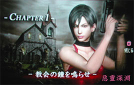
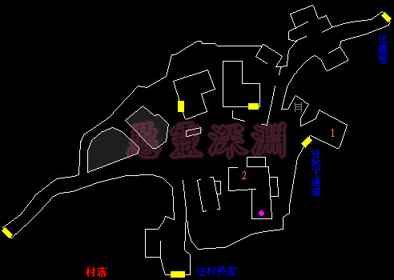
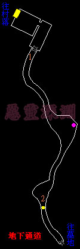
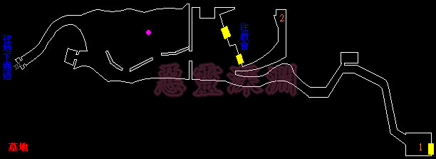
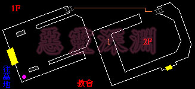

|
惡靈古堡～惡靈古堡４----The Another Order─Chapter1
|
|
 使教會的鐘響起 地圖上的紫色圓點●表示高價寶物的位置，標綠色的道具則是過關必須的重要道具。
 一開始的起始點在編號1的位置， 在這個地圖村民會不斷的出現，途中還會看到Leon被村民追逐的情況。在一段時間過後，看到了 鑰匙出現在編號2屋頂上的動畫，這時只要在編號2屋前就可以使用勾繩槍到達屋頂，拿取紋章的鑰匙。拿到鑰匙之後即可開門往地 下通道了，一旦離開後就不能回來，所以記得把高價寶物くぼみのある仮面（有凹槽的面具）帶走。 由於這個地圖的敵人是無限的，所以對自己的戰鬥技術有信心的玩家，可以在此處賺到大筆的道具。另外，雖然不斷聽到電鋸的聲 音，但是可以放心不會碰到電鋸男。
 地下通道的小屋跟武器商人整理好裝備後，在編號1下了通道，往前幾步，後面就有兩個村人追上來了。在編號2的地方，前後都會 出現村民，要小心。這裡的高價寶物是仮面の宝石＿緑（面具的寶石＿綠）。
 墓地上依舊有幾隻烏鴉，也有一批村民，在墓地中的高價寶物是仮面の宝石＿橙（面具的寶石＿橙）。雖然此章節的任務是鳴響教 會的鐘，但若只是用槍射擊鐘的話，會明白告訴你不行。先往編號1，那裡電鋸姐妹之ㄧ，打倒可得5000ptas，最重要的是拿地上的 ステインの宝石＿緑（啤酒杯的寶石＿綠），這看似是高價寶物，但在任務中卻是過關必備的道具。拿著這個寶物往編號2，依照 本篇的解法解開機關，拿機關中的圓形的紋章，此時後方的柵門會關上，並出現兩個村民，只要把啤酒杯的寶石＿綠，放入機關之 中，就可以打開柵門。注意回到教會門口時，有另一批村民出現。 在教會的門上使用圓形的紋章，進入教會。
 教會一樓有高價寶物仮面の宝石＿紫（面具的寶石＿紫）。上二樓後在編號１處調整藍綠紅的光影，成功後就會敲響教會的鐘。 任務結束。
疑難解答
仮面の宝石＿緑（面具的寶石＿綠） 3000ptas 仮面の宝石＿橙（面具的寶石＿橙） 3000ptas 仮面の宝石＿紫（面具的寶石＿紫） 3000ptas 組合──仮面＋緑＋橙＋紫（面具＋綠＋橙＋紫） 20000ptas
彈藥、恢復藥等。遊戲中雖然有武器商人，卻無法改造武器，所以累積彈藥以備不時之需是必要的喔。 未經許可禁止轉載連結 |
惡靈深淵Biohazard Abyss http://98.to/coolbio